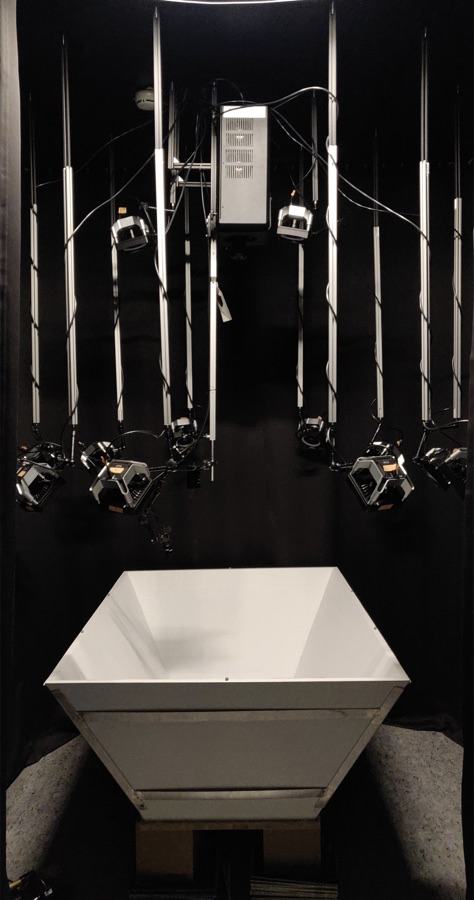
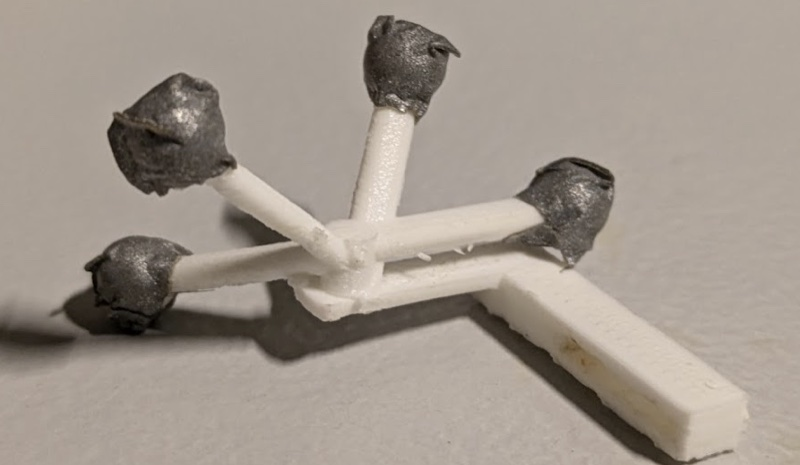
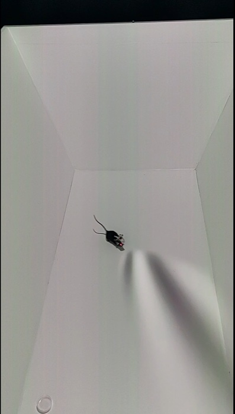
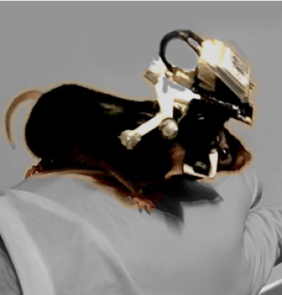

One of the core problems in systems neuroscience is that the brain didn't evolve to sit still. Most of what we know about how the visual cortex processes the world comes from experiments where an animal is head-fixed and staring at a computer monitor while a much richer, embodied reality full of self-motion, vestibular input, and environmental feedback is stripped away. My PhD work centered on building a system that gets closer to bridging the lab and the real world: a real-time, closed-loop virtual reality platform that lets a freely moving mouse explore an immersive 3D visual environment while we track exactly where it is, where it's looking, and what its brain is doing in response.
This meant the system couldn't just render pretty graphics — it had to track a small, fast-moving animal in 3D space at high speed, and re-render a perspective-correct scene from that animal's point of view fast enough that the animal never noticed the lag. Getting from motion capture data to correct image on a complex projection surface as fast as possible turned out to be the hardest and most interesting part of the whole project.
Huge help from Drago Guggiana-Nilo
I would like to thank Drago Guggiana-Nilo for his invaluable guidance and support throughout this project. Drago was my supervisor for the duration of my PhD, providing guidance, feedback, and support at every stage of the project, and was my co-builder for most of this. Drago got the VR system hardware built and running before I pushed its capabilities to the limit.
Standing on ratCAVE's shoulders
I didn't start from a blank page. The system builds on ratCAVE, an open-source rodent VR framework from Del Grosso et al. (2017, 2019). The core idea — track an animal's head, project onto a physically modeled arena, and warp the rendered scene to that animal's perspective every frame — is theirs. My major contribution was ripping out ratCAVE's Python-based OpenGL rendering engine and replacing it with Unity3D. That's a bigger change than it sounds: it traded a lightweight scientific rendering stack for a commercial game engine, in exchange for GPU shader access, a much larger development ecosystem, and — critically — first-class compatibility with the motion capture hardware we depended on.
Hardware: tracking a mouse's head at 360 FPS
The whole system is only as good as its tracking, so a large fraction of the engineering effort lived in the physical rig rather than the code.
| Rendering PC | Intel Xeon E5-1650, 64 GB RAM, Nvidia GeForce GTX 1080 Ti (11 GB VRAM), Windows 10 |
|---|---|
| Projector | ProPixx high-speed LED projector (VPixx Technologies) |
| Motion capture | 12× Optitrack Prime 17W cameras at 360 FPS, Motive software, ~100 μm 3D spatial resolution |
| Arena | 50 cm × 100 cm, 60° angled walls (50 cm tall), matte white PVC-lined wood |
| Triggers/DAQ | National Instruments BNC-2110, processed with custom Python software |

The VR arena itself is a wood enclosure with angled walls, lined with a matte white PVC film to minimize reflections from the overhead projector (and make it easier to clean up after the mice). Six wooden spheres wrapped in retroreflective tape are glued along its top edge - two per long side and one on each short end - so the motion capture system can track the arena itself as a rigid body.

To track the mouse, I designed a custom 3D-printed head tracker (printed on an Ultimaker 3 Extended) with retroreflective tape on the tips of four prongs. In Motive, the tracked points get bundled into a rigid body — a fixed spatial arrangement of markers with a defined forward vector and pivot point. I aligned that forward vector with the mouse's locomotion direction and translated the pivot point to sit roughly between the animal's eyes, so that rotations reported by the tracking system actually corresponded to head rotations, not an arbitrary point on the tracker. For head-fixed experiments the same trick applies to a static head-bar mount, since accurate stimulus orientation still depends on knowing exactly where "the eyes" are relative to the arena.
The 12 Optitrack cameras are split across two roles: two are mounted directly above the arena, flanking the projector, for top-down capture; the other ten are mounted at 1 m height around the arena, angled so their combined fields of view cover the whole space with no blind spots. Six of the twelve have their infrared filters removed, which lets them double as regular cameras for 3D-scanning the physical arena itself — more on that below.
Modeling the arena and warping the image onto it
A Unity scene is three-dimensional, but a video projector only outputs a flat 2D image. To make a 2D projection look correct on the arena's angled walls, I needed two things: an accurate 3D model of the physical arena, and a way to map the rendered image onto that model's actual geometry.
The 3D model came from the motion capture rig itself: a grid of white circles was projected onto the arena surface and moved around while the IR-filter-free cameras captured its position in 3D, building up a point cloud of the arena's interior surface that I exported as a 3D object. I imported that model into Unity and aligned its pivot point to match the pivot of the arena's tracked rigid body so the virtual and physical arenas stay locked together.
I then used the open-source Unity Projection Mapping package to calibrate the actual warp: seven points on the virtual arena - the four bottom corners and three of the top corners — get manually mapped to their corresponding points on the physical arena. That produces a projection matrix that's saved once and loaded at runtime, warping every subsequent frame so it lands correctly on the physical surface regardless of the arena's odd angled-wall geometry.
Rendering from the mouse's point of view: cube mapping
Knowing where the projector needs to warp its image is only half the problem — the other half is generating the right image for wherever the mouse's head currently is and however it's currently oriented, every single frame, as the animal moves freely around the arena.
This is solved with cube mapping (Greene, 1986), a technique more commonly used for real-time reflections in video games. On every frame, a custom script renders the entire 3D scene onto the six faces of an imaginary cube centered on the head tracker's live position. That cube map is then projected onto the inner surface of the virtual arena model. The effect: from the head tracker's exact vantage point, the visual scene appears as though it's being displayed on a screen directly in front of the animal — flat, consistent, and free of distortion — despite the fact that it's actually being projected onto physically angled walls from a fixed point 2 meters overhead. As the animal moves and turns its head, the cube map recenters and the illusion holds.
Custom shaders for visual stimuli

Beyond the arena and projection-mapping infrastructure, HLSL shaders were how I generated the actual visual stimuli used in experiments. The main stimulus was a spherically corrected, drifting sinusoidal grating (a 3D Gabor patch): a 30 cm-radius sphere centered on the head tracker, with a custom shader generating drifting stripes with adjustable color, spatial frequency, temporal frequency, and direction, and a second shader applying a Gaussian alpha mask to soften its edges. The whole sphere gets rotated 30° up from the tracked horizontal plane so the stimulus sits within a mouse's binocular visual field, and its position follows the animal's head while its rotation stays locked to the tracked horizontal plane — so the grating's orientation and drift direction stay stable in head-centered coordinates no matter how the animal moves. Standard experimental blocks presented 12 grating directions, evenly spaced across ±180°, at 2 cycles/s temporal and 0.04 cycles/° spatial frequency, ten repetitions each.
Tying it to the rest of the rig
The VR engine didn't operate in isolation. Custom Python software drove experiment control and talked to the peripheral hardware over the NI DAQ: an overhead CMOS camera captured pose-estimation video at 30 FPS during freely moving sessions, an identical camera with 780 nm IR illumination recorded eye movements during head-fixed sessions, and a rotary encoder on the running wheel converted to running speed in post-processing. None of this is glamorous, but a VR system is only useful to neuroscience if its stimulus timing can be tied precisely to physiology and behavior data recorded through entirely separate pipelines.
Pairing VR with a wireless miniscope

Tracking an animal's head and rendering the right image is only half the point — the other half is tying all of it to what the brain is actually doing. For that, animals wore a wirefree UCLA V3 miniscope, a miniaturized one-photon microscope for in-vivo calcium imagings. These miniscopes carry their own onboard LED excitation source and a CMOS imaging sensor to record emitted fluorescence, with fields of view on the order of a few hundred microns — small and light enough that an animal can roam around while wearing one.
We specifically used the wirefree variant of the UCLA V3 miniscope, which swaps the usual fiber-optic and data tether for a small battery and an onboard SD card that saves data locally. That choice mattered for two reasons: a trailing cable would have cast shadows on the projected visual stimulus as the animal moved through the arena, and cable slack introduces torque and drag on the head that bias natural movement. The tradeoff is weight, since the battery adds mass the animal has to carry, but once acclimated, an adult male mouse wearing the wirefree miniscope can move and behave freely with no tethers at all, letting us record calcium activity from visual cortex with precisely tracked head position and closed-loop visual stimuli.
Where this ended up
The system underpins the bulk of my dissertation work on visual stimulus tuning in mouse primary visual cortex under freely moving conditions, and it also ended up in front of a much wider audience than I expected - it was featured in Werner Herzog's documentary Theatre of Thought and on the ZDF program Terra Xplore.
Unfortunately, the current lab version of the codebase isn't public due, but an earlier version of the platform is available on GitHub, and there's a short video demo showing the system tracking and rendering in real time.